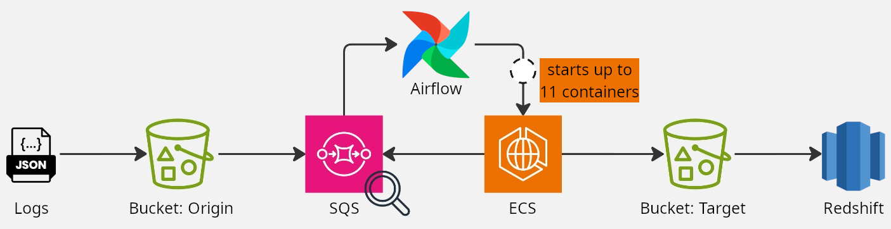

(S)ituation: At Seedz, a data-driven company operating across 10 countries and facilitating over BRL 10 billion in transactions, the existing data pipeline for processing loyalty program logs was inefficient. It relied on a scheduled AWS Fargate job to sequentially process logs from the previous day, leading to delays of up to 3.5 hours for 400,000 logs.
(T)ask: As a Data Engineer in 2025, I was responsible for redesigning this pipeline to significantly reduce processing time, improve scalability, and cut infrastructure costs.
(A)ction: I evaluated various solutions and designed a new batch-processing architecture using Python, multiprocessing, Docker, and Apache Airflow. Instead of multithreading, the pipeline adopted multiprocessing for greater parallelism and ran on EC2 instances orchestrated via ECS. Logs arriving in Amazon S3 triggered SQS messages, and the Airflow DAG, scheduled every 10 minutes, launched up to 11 containers to process logs in parallel. Transformed logs were stored back in S3 and ingested into Redshift for downstream analytics.
(R)esult: The new solution reduced the processing time for 110,000 logs from 55 minutes to just 5 minutes—a 90% performance improvement. It also ensured cost-effective scalability, timely data availability, and better support for analytics dashboards and decision-making processes.
At Seedz, we are committed to transforming the agribusiness ecosystem through data-driven solutions, such as a loyalty program that enhances sales campaigns by rewarding sellers and offering cashback to customers. Operating in 10 countries, our platform has enabled financial transactions worth over BRL 10 billion.
As a Data Engineer in 2025, I led the optimization of a data pipeline responsible for processing logs generated by our loyalty points engine and loading them into the data lake. These logs, stored individually in an Amazon S3 bucket within date-partitioned folders in JSON format, required standardization and transformation into a more efficient format to facilitate downstream analytics.
The legacy pipeline was inefficient. It utilized an AWS Fargate job scheduled to run early the next day to sequentially process logs generated the previous day. Despite employing 10 threads and leveraging Amazon Redshift for progress tracking, processing 110,000 logs still took up to 55 minutes. With an average daily volume of 400,000 logs, the pipeline required up to 3.5 hours to complete, resulting in unacceptable latency for downstream analytics.
To address the inefficiencies, I designed a cost-effective and high-performance batch-processing solution. Since real-time streaming was not required, we focused on optimizing batch processing. After evaluating AWS Glue and finding it cost-prohibitive, we opted for a Python-based pipeline leveraging multiprocessing for parallelism. The solution was containerized with Docker, enabling horizontal scalability, and orchestrated using Apache Airflow. The entire system was deployed on EC2 instances managed through Amazon ECS, ensuring flexibility and cost efficiency.
Each log, in JSON format, triggers a message to an SQS queue upon arrival in S3. As the frequecy of log generation was low, we scheduled Airflow DAG to check every 10 minutes for pending messages. If found, the DAG starts up to 11 containers, each processing 10,000 logs, allowing us to handle up to 110,000 logs every 10 minutes while staying within SQS’s 120,000 in-flight message limit. The processed results are stored back in the data lake (S3) in a standardized and optimized format. These results are then ingested into Amazon Redshift to support downstream analytics, including real-time dashboards and reporting, ensuring faster insights and improved decision-making.
 Figure 1: Illustration of the data pipeline for processing logs from the loyalty program.
Benchmark tests revealed significant performance improvements with the redesigned pipeline. Using a container with 4 GB RAM and 2 vCPUs, single-threaded processing of 10,000 logs took 67 minutes. By leveraging multiprocessing to split the workload into 10 parallel processes, the processing time was reduced to just 5 minutes, with each process consuming approximately 40 MB of memory. Therefore, the entire pipeline could process 110,000 logs in 55 minutes, achieving a remarkable 90% reduction in processing time. This optimization significantly improved the pipeline’s performance, enabling faster processing, greater scalability, reduced costs, and enhanced data availability for downstream analytics.